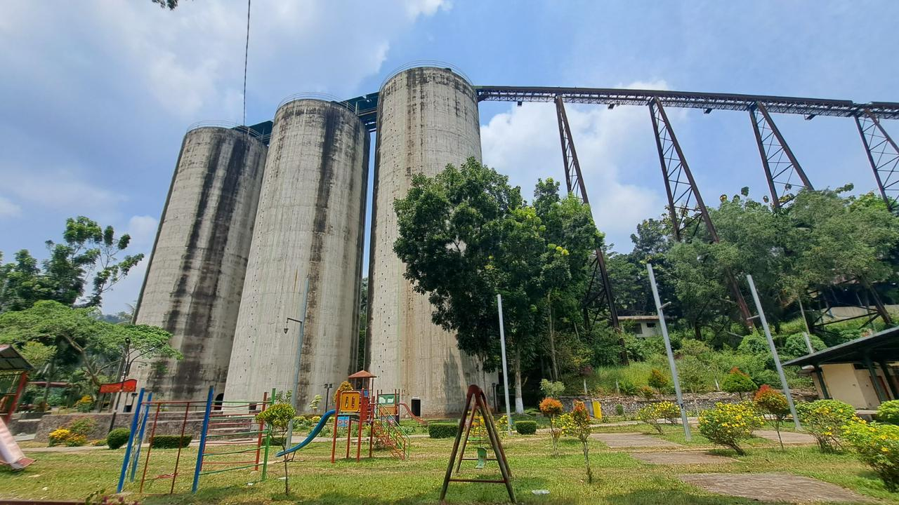
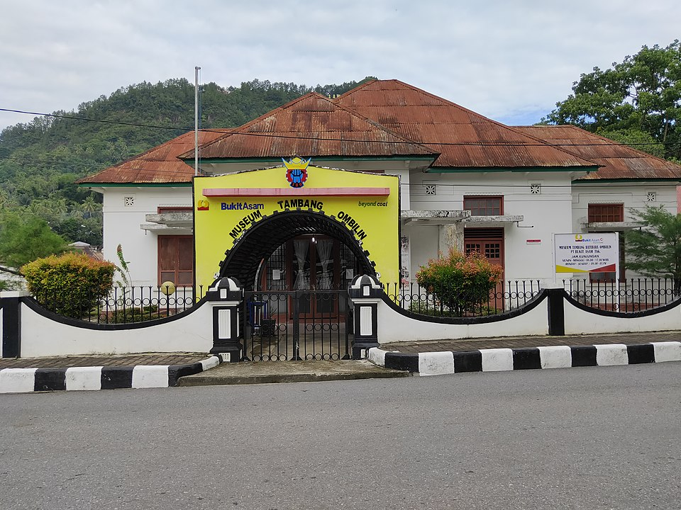
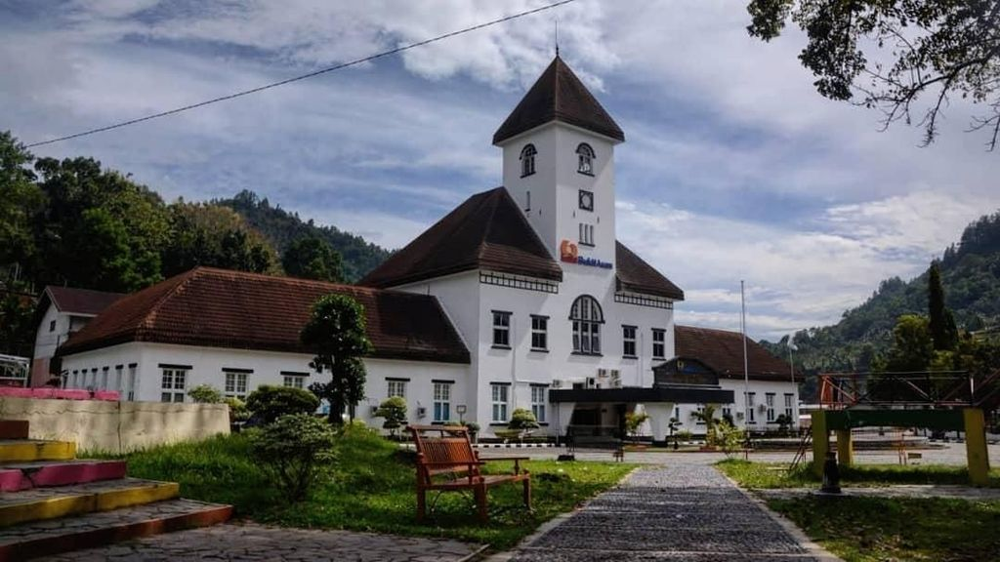

Tambang Batubara Ombilin
Warisan Dunia UNESCO sejak 2019
Tambang Batubara Ombilin Sawahlunto adalah situs warisan dunia UNESCO yang terletak di Kota Sawahlunto, Sumatra Barat. Ditetapkan pada tahun 2019, situs ini merupakan salah satu peninggalan sejarah pertambangan batubara tertua di Asia Tenggara.
Tambang ini beroperasi sejak abad ke-19 pada masa kolonial Belanda dan menjadi sakbisanya perkembangan industri pertambangan di Indonesia. Area pertambangan meliputi lubang tambang, fasilitas pengolahan, serta pemukiman pekerja yang masih terjaga hingga kini.
📌 Fakta Singkat:
- Ditetapkan UNESCO: 6 Juli 2019
- Luas area: 268 hektar
- Beroperasi: 1892 - sekarang
- Jalur kereta api batubara pertama di Sumatra


Nilai Universal Luar Biasa (Outstanding Universal Value)
Teknologi Pertambangan
Mewakili teknologi pertambangan batubara bawah tanah tertua di Asia Tenggara dengan sistem transportasi terowongan miring.
Kota Perusahaan
Sawahlunto berkembang sebagai kota perusahaan (company town) yang terencana dengan infrastruktur lengkap untuk pekerja tambang.
Budaya Pekerja Tambang
Warisan budaya berupa kehidupan sosial masyarakat tambang, termasuk makanan, kesenian, dan tradisi yang masih bertahan.
Area Warisan Dunia
-
1
Lubang Tambang Mbah Soero
Lubang tambang tertua yang masih bisa dikunjungi untuk melihat langsung aktivitas penambangan masa lalu.
-
2
Museum Tambang
Menyimpan koleksi alat-alat tambang, dokumen sejarah, dan diorama kehidupan penambang.
-
3
Gedung Semen Pejabat Tambang
Kantor pusat pengelola tambang dengan arsitektur kolonial yang masih terawat.
-
4
Pemukiman Pekerja
Kompleks perumahan pekerja tambang yang menunjukkan stratifikasi sosial masa kolonial.
📍 Lokasi:
Kota Sawahlunto, Sumatra Barat
Jarak dari Padang: ± 95 km (3-4 jam perjalanan darat)
Informasi Kunjungan
Jam Operasional
08.00 - 17.00 WIB
Senin - Minggu
Harga Tiket
Rp 10.000 - Rp 25.000
(termasuk pemandu)
Kontak
(0754) 123456
info@ombilinheritage.id
Fasilitas
Mushola, Toilet, Parkir, Kantin
Galeri Foto

